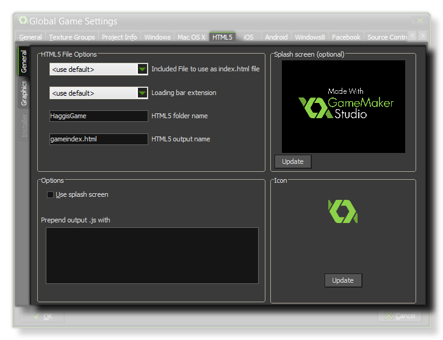
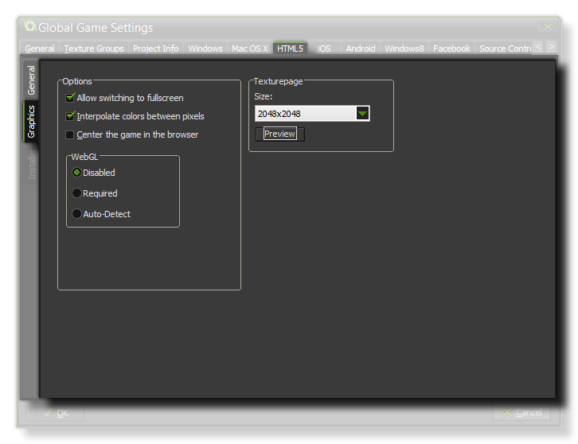

The HTML5 Tab
This section deals with the HTML5 tab of the Global Games Settings Window.
This HTML5 tab is split into two separate sub-tabs (accessible on the left of the window) to make changing and updating the information for your game clearer and less complicated. These tabs are explained in the following sections.
General
 At the top of the window you can set the File options for your HTML5 game, which includes:
- adding a custom index.html to use instead of the pre-defined one that GameMaker:Studio generates by default. This can be very useful if you have a website design implemented or want to include certain features in all your HTML5 builds.
- choosing a Loading Bar Extension. This should have been added in as an extension to the GameMaker:Studio resource tree (there is a demo of this included with the program) and will override the standard loading bar when selected.
- selecting a new name for the folder where your HTML5 game files will be stored (default is "html5game").
- selecting a new name other than the default "index.html".
Once that is done you will need to give your game a favicon and a Splash Screen. The icons should be authored as an *.ico file and can be 16x16, 32x32, 48x48, or 64x64 pixels
in size, and 8-bit, 24-bit, or 32-bit in color depth. The splash screen should be the size of the canvas that is going to hold your game and will override any loading bars if you tick the Use Splash
Screen option (ie: you can have a loading bar, OR a splash screen, but not both). Smaller or larger images are permitted but will be scaled to fit.
You also have the further option to prepend the *.js output with any extra javascript necessary for your game. For example, a Chrome Store app may require that you add
window.localStorage = undefined; to the output JS, for which you would use this option.
Graphics
 Here you can change the following details related to how your game will be displayed (note that not all browsers will display your game in the same way, so test these options on as many browsers as possible to make sure that they have the desired effect).
- Allow Switching To Fullscreen - Checking this will allow the user to toggle the game from windowed to fullscreen mode using <CTRL> + <CMD> + <F> on Mac and F10 on Windows.
- Interpolate Colors Between Pixels - Turns on interpolation, which basically "smooths" pixels. for crisp pixel graphics, it should be off, but if you have nice alpha blends and smoothed edge graphics it is better left on.
- Center The Game In The Browser - Checking this will automatically center the game screen within the browser running the game.
- WebGL - Choose whether to switch off WebGL support, make it optional (auto-detect), or make it a requirement for your game. It should be noted that to test performance under all circumstances, you should have this as disabled, then normally set it to auto-detect for publishing. Making it a requirement may reduce considerably the compatibility that your game has with different browser types.
Finally there is the option to set the size of the Texture Page. The default (and most compatible) size is 2048x2048, but you can choose from anywhere between 256x256 up to a
whopping 8192x8192! There is also a button marked View which will generate the texture pages for this platform and then open a window so that you can see how they look. This can be
very useful if you wish to see how the texture pages are structured and to prevent having texture pages larger (or smaller) than necessary.
NOTE : Be aware that the larger the size of the texture page, the less compatible your game will be.